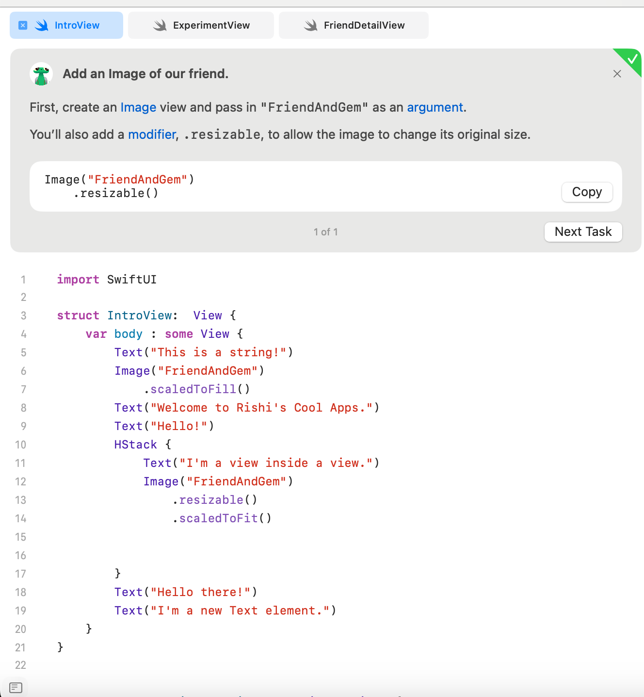
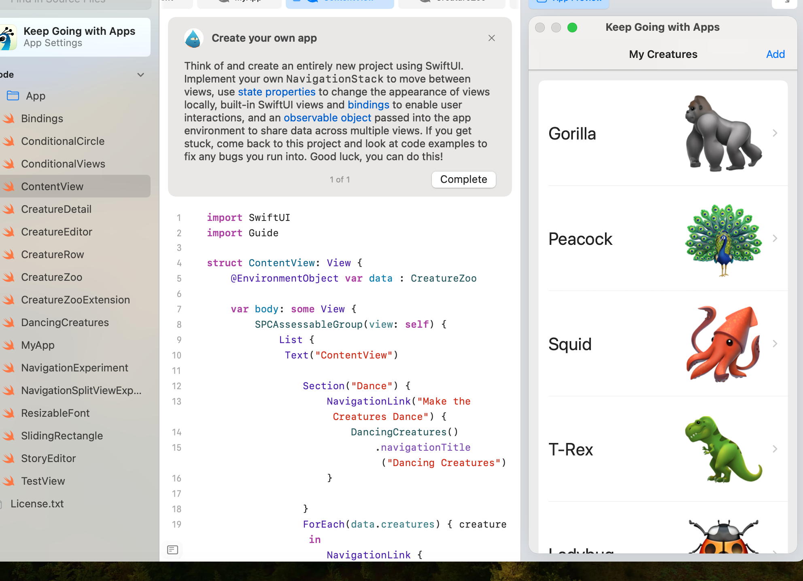

Unit 3 Concepts
 Concepts Covered
Creating New SwiftUI Views
Creating new views in SwiftUI involves defining a new struct that conforms to the View protocol, allowing you to build reusable UI components.
Modifying SwiftUI Views
SwiftUI views can be modified using various modifiers, which change their appearance or behavior, such as changing colors, adding padding, or setting alignment.
SwiftUI Views
SwiftUI offers a variety of built-in views that help you build user interfaces quickly. These include Text, Image, Button, and more, each with unique properties.
Composability
Composability in SwiftUI allows you to combine multiple views to create complex interfaces, making your code more modular and maintainable.
Modifying State
Managing state in SwiftUI is crucial for building interactive apps. You can use @State and other property wrappers to track changes in your app's data.
Using a Conditional Modifier
Conditional modifiers allow you to alter view attributes based on certain conditions, helping you create dynamic interfaces that respond to user interactions.
SwiftUI Built-in Views
SwiftUI includes built-in views like List and Form that simplify the process of creating standard interface elements while ensuring a consistent look and feel.
Navigating in SwiftUI
Navigation in SwiftUI is achieved using NavigationView and NavigationLink, enabling smooth transitions between different views within your app.
Sharing Data Between Views
Data can be shared between views using binding or state management techniques, allowing for consistent data representation across the app's interface.
Creating a New View to Share Data
Creating a new view that can receive data from a parent view enhances modularity and makes it easier to manage complex user interfaces.
Adding and Deleting Creatures
This concept involves implementing functionality to add new items to a list and remove them, providing a dynamic way to manage collections within your app.
Adding a CreatureDetail View
Creating a detailed view for each creature allows users to view more information about selected items, improving the overall user experience.